阅读建议
这一页整理为更适合连续阅读的攻略版本。对应章节源文件：zelda-tp-ch6.html 生成。文中配套图片会通过站内本地路径提供，便于稳定阅读。
你可以通过侧边栏保持章节顺序，也可以随时切换中英文版本，对照阅读同一页面。
第 6 章
回到海拉尔城，林克去特尔玛的酒馆了解信息，得知最近鲁斯尔（Rusl）外出了，林克和那群人谈话后调查地图知道鲁斯尔去了北法隆森林。随后林克回到雪山，在之前第一次见到亚托的地方可以和亚托进行一场滑雪比赛，胜利后能和亚塔进行比赛，再次获胜后还能得到一片 心之碎片 43 。

这一页整理为更适合连续阅读的攻略版本。对应章节源文件：zelda-tp-ch6.html 生成。文中配套图片会通过站内本地路径提供，便于稳定阅读。
你可以通过侧边栏保持章节顺序，也可以随时切换中英文版本，对照阅读同一页面。
回到海拉尔城，林克去特尔玛的酒馆了解信息，得知最近鲁斯尔（Rusl）外出了，林克和那群人谈话后调查地图知道鲁斯尔去了北法隆森林。随后林克回到雪山，在之前第一次见到亚托的地方可以和亚托进行一场滑雪比赛，胜利后能和亚塔进行比赛，再次获胜后还能得到一片 心之碎片 43。
林克打听鲁斯尔的去向
林克在回到之前米德娜传送进神圣之森的位置见到了鲁斯尔，他告诉林克，在这里的深处有一座神殿，那里隐藏着一个秘密，并且还提供了一只金鸡（Golden Cucco）帮助林克进入神圣之森（利用金鸡往森之神殿门口的右边飞）。
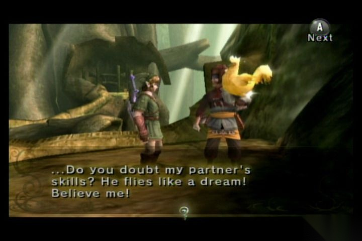
鲁斯尔给林克一只金鸡
林克一路进入到森林深处并再次见到了那个提灯吹喇叭的小妖怪（Skull Kid），它又开始和林克玩捉迷藏，林克只好不停的找它并攻击以打开新的道路，不过这次他会藏得更隐蔽，第一次他躲到柱子后面，第二次他会站到水中间的一块岩石上，第三次他则躲到树上，这里林克需要先爬到高处才能在对面的树顶看到他，用弓把他打下来，林克还是依靠他的提灯发出的火光追踪他。随后来到先前与他战斗之地，取胜后来到之前得到征服者之剑的地方，把剑插回取剑的地方会打开通往时之神殿（Temple of Time）的路。出来后会出现五个暗影使者，林克先杀死其中三个以后，再迅速杀死另外两个即可顺利解决。
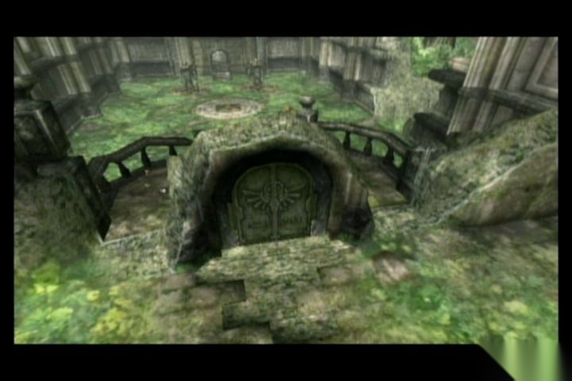
提灯吹喇叭的小妖怪把林克引到时之神殿前
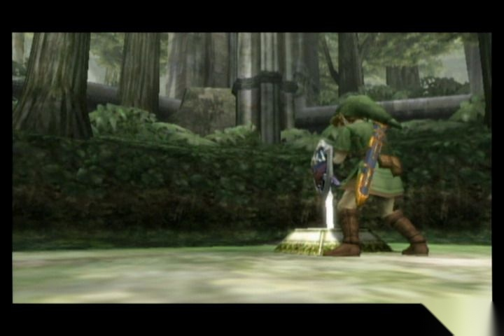
把剑插回取剑的地方，打开通往时之神殿（Temple of Time）的路
林克进入后直接走到一个可以插剑的地方，插进去后出现通往房间 1 的路。
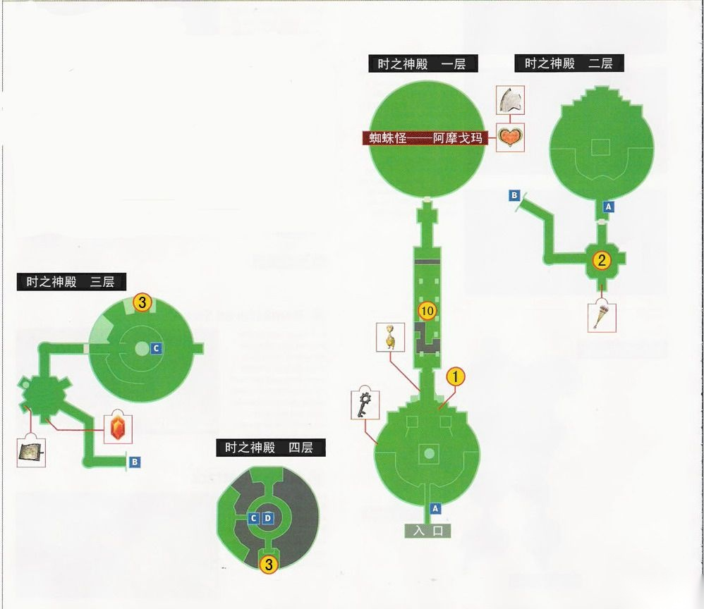
时之神殿迷宫一至四层地图
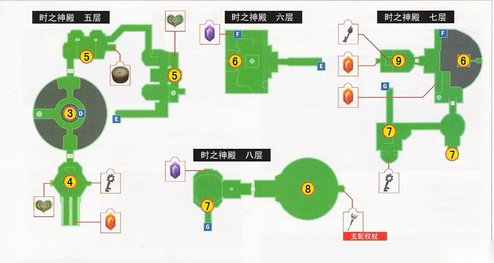
时之神殿迷宫五至八层地图
房间 1：进入房间 1，在米德娜的提示下切换狼形态并打开感知，发现门口旁边的上古铜像少了一座，但是目前并不知道雕像去了哪儿，在门前的台子上有一个无法破坏的上古铜壶，将它搬到另一边的台子并放到地上的机关上，随后会升起一个台阶，爬上去到路的尽头点亮两个灯座，就会出现箱子并得到一把小钥匙，用它可以打开南面的门并进入房间 2，回来后能得到这个迷宫的欧库。
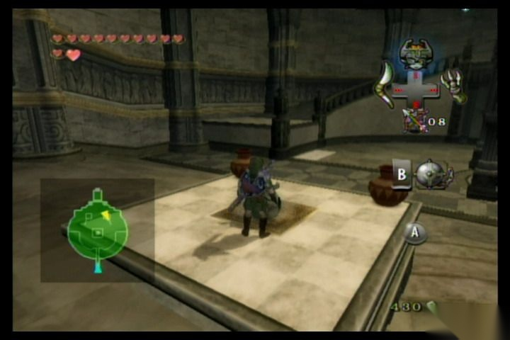
把上古铜壶搬到台子地上的机关上
房间 2：房间正中有一个机关，搬个坛子放在上面可以打开门，南面的箱子里有箭，随后向西进第一道门后用箭把坛子射掉可通过第二道门，沿着路走上去后会遇见一个时之守卫，他的弱点在背部，干掉他后能取得这个迷宫的地图，将南面台子上的两个上古铜壶分别放到门左边的两个机关上可以将门打开，沿路可到房间 3。
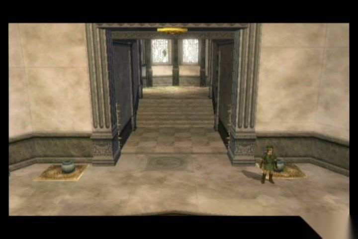
将南面台子上的两个上古铜壶分别放到门左边的两个机关上可以将门打开
房间 3：走左边沿旋梯一路上升，用陀螺仪通过中间的断裂处到顶部可以见到一个电梯，转动中间的把手让电梯降到最底部，将底部的上古铜壶搬到电梯上并运到上层，放到南边的机关上，再将西边的另一个铜壶放到另一边，这时要迅速站到前面的白色墙壁上，之后墙壁会升起将林克送上去，接着向南进入房间 4。
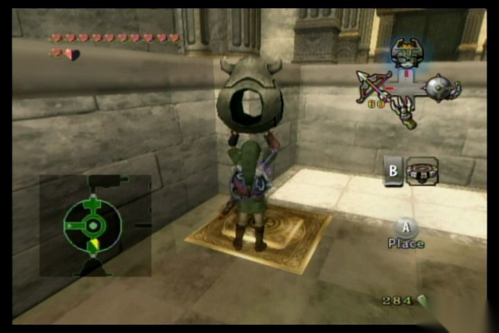
将底部的上古铜壶搬到电梯上并运到上层，放到南边的机关上，再将西边的另一个铜壶放到另一边
房间 4：这里又有两个时之守卫，将他们解决以后会出现一个箱子，里面有把小钥匙，之后回到房间 3 的上部，走北边开门进入房间 5。
房间 5：这里有一个攻击后转换状态的机关，每攻击一次会转换房间内墙壁的位置，先攻击一次将第一道墙壁移开，之后进去用弓攻击使第 2 道墙壁移开，前面的箱子有指南针，随后再攻击一次后朝东面前进。上楼后又有一个这种开关，用弓射击使其不断转换状态后朝东面通过，沿路前进到房间 6。
房间 6：去楼上，用上古铜壶帮忙通过天平后继续前进到房间 7。
房间 7：进门后朝西边前进通过一条走廊来到陷阱房间，注意躲避陷阱，箱子里有小钥匙，在电网前的机关处，可到旁边取一个铜壶放到陷阱上，然后继续前进，干掉两个时之守卫后会出现新的路，爬上去打开锁的门后进入房间 8。
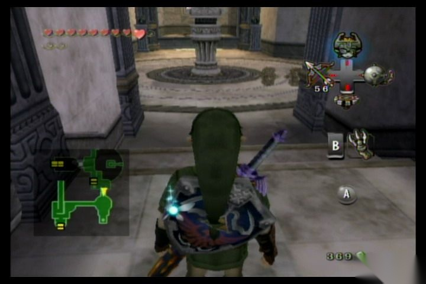
这个房间里有陷阱
房间 8：这里是小 BOSS 铁甲战士，小 BOSS 也分两个阶段，首先要先攻击他剥落外面的盔甲。等到盔甲全部剥落后他会丢掉盾牌进行白刃战，总的来说难度不高，两个阶段都可以用背后斩进行有效攻击。胜利后可以在箱子里取得支配权杖（Dominion Rod）。作用是将其光球打入上古雕像和铜壶后可以让其按照林克的行动而行动。在支配权杖上方就是失踪的上古雕像，用支配权杖将其取下后带到门口的钟下就会被传送回房间 7，随后进入房间 7。
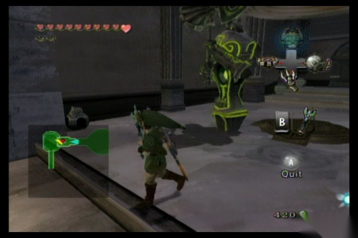
与小 BOSS 铁甲战士战斗
房间 7：操纵雕像破坏掉栅栏继续前进，另外如果找不到雕像可以看地图，雕像会以红点的形式标记出来。先搬个坛子放到中间的机关上令墙壁降下，待林克和雕像上去后再将坛子破坏后下去到陷阱房，这里可以让雕像先过去踩下机关关闭陷阱后林克再过。那些陷阱都可以用雕像摧毁，带到地上有许多旋转陀螺的房间，用雕像将中间的雕塑摧毁会出现机关，将雕像移到最南边后，再用支配权杖把两边的铜壶取下一个放到机关上令雕像升起，随后去房间 6。
房间 6：先把雕像移到天平上，把左边天平上的铜壶扔到右边，再从楼下上去到另一边，墙壁上的铜壶用支配权杖取下两个放到天平上，然后让雕像过来，接着再将 4 个铜壶扔到对面后林克离开天平，使天平平衡后将雕像移动到楼下的钟处，随后，再到升到最高的天平上，钟的正上方有可以抓的地方，用飞爪上去后再利用陀螺仪到房间 9。
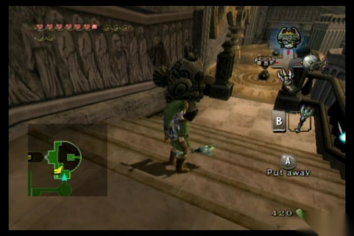
利用支配权杖控制雕像移动来完成任务
房间 9：解决掉房间里的怪后用飞爪抓到上层，然后将楼下的壳抓上来，再加上本来的两个铜壶，压在四个机关上可以打开楼下的栅栏取得大钥匙，接着回房间 5。
房间 5：房间 5 的墙壁可以用雕像全部破坏掉，另外让雕像在里面踩下机关关闭电网后可以取得 心之碎片 24，随后将雕像带回楼下的钟处，传送回房间 3。
房间 3：先去房间 4，拿一个铜壶扔到最左下的走道上去，接着再用支配权杖将其移动到走道尽头的机关上，然后把对面对称位置的铜壶也移到尽头的机关上可以打开隐藏箱子并得到 心之碎片 25。回到房间 3 将升降梯转到最高处把雕像移过来，接着将升降梯转到最下层，消灭掉所有的小蜘蛛后电网会自动关闭，然后再将雕像移动到 1 楼把栅栏破坏，其中另一边的栅栏后有灵魂灯怪，最后将雕像传送回房间 2。
房间 2：用飞爪通过第一道栏杆后可以控制雕像，接着一直将其带到尽头的钟处，然后进入房间 1。
房间 1：将雕像放回到门的另一边后能打开北面的门，随后可以进入房间 10。
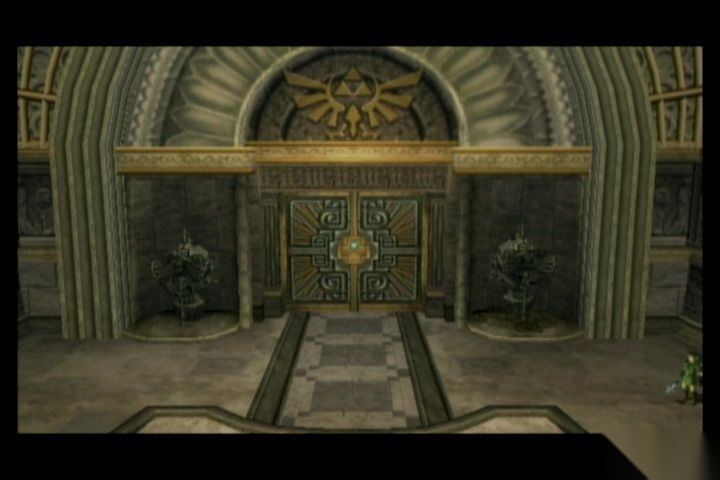
让雕像归位便可打开门
房间 10：注意躲避陷阱一直朝北面移动，到机关前面，将一个铜壶扔过去并用支配权杖控制使其打开第一道门，随后再操控让其离开并打开第 2 道门，之后可以进入 BOSS 房间。
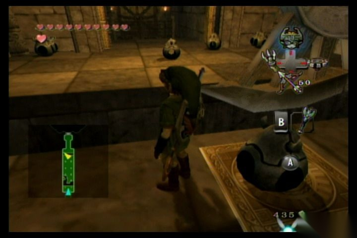
注意躲避陷阱
BOSS 战：蜘蛛怪——阿摩戈玛（Twilit Arachnid—Armogohma）
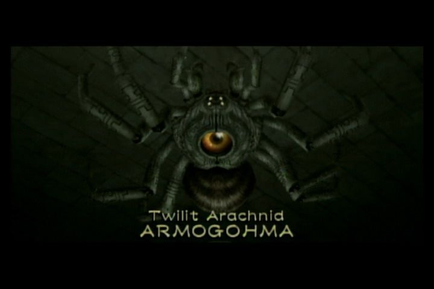
BOSS：蜘蛛怪——阿摩戈玛（Twilit Arachnid—Armogohma）
阿摩戈玛会在天花板上用眼睛喷火攻击林克，只有在他喷火时，眼睛才会张开，利用这个时机用弓箭攻击其眼睛会让它掉下来，然后迅速切换成支配权杖，并控制离它最近的一个巨型上古雕像对阿摩戈玛攻击，之后阿摩戈玛还会放出小蜘蛛来干扰林克，可以先解决掉小蜘蛛后再处理阿摩戈玛，3 次攻击后阿摩戈玛就会被消灭，但是他的眼睛仍然可生长出新的触手，不过此时他的威力已经大大减弱了，只需要用弓再直接攻击三次后就可以消灭掉。林克也取得了第二块镜子碎片。
此刻米德娜感觉到黑暗力量已经越来越强大，敦促林克赶紧找到最后一片镜子碎片以尽快进入黎明世界阻止赞特的邪恶计划。之后会传送到神殿门口，先别急着离开，到下面的房间的楼梯旁边，这里有两座上古雕像，用支配权杖控制令其出来后，左边是一个鬼魂之魂，右边则是一片 心之碎片 26，拿到后就离开时之神殿返回海拉尔城吧。
参考：
这套双语站保持稳定的阅读顺序，便于你按一致的节奏浏览 Twilight Princess 相关内容。
{kind=link}
{kind=link}
{kind=link}
{kind=link}
{kind=link}
{kind=link}
{kind=link}
{kind=link}
{kind=link}
{kind=link}
{kind=link}
{kind=link}
{kind=link}